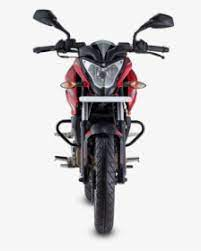

NS 200 about
homeNS
aboutNS
modelsNS
imagesNS
About Pulsar NS 200
The Bajaj Pulsar NS200 is powered by 199.5cc BS6 engine which develops a power of 24.13 bhp and a torque of 18.74 Nm. With both front and rear disc brakes, Bajaj Pulsar NS200 comes up with anti-locking braking system. This Pulsar NS200 bike weighs 159.5 kg and has a fuel tank capacity of 12 liters.
Bajaj Auto has launched the TVS Apache RTR 200 4V, rivalling 2023 Pulsar NS200 in the Indian market. The 200cc motorcycle benefits from updated hardware and improved rider aids.
The biggest change on the 2023 Bajaj Pulsar NS200 is the addition of upside-down front forks instead of the conventional telescopic units on the previous version. Meanwhile, the suspension setup at the back continues to use a preload-adjustable rear monoshock. Apart from the suspension setup, Bajaj Auto has also revised the rider safety net. The 2023 Pulsar NS200 now comes with a dual-channel ABS as against a single-channel unit. Lastly, Bajaj Auto has revised the instrument cluster on the 2023 model, and the updated display shows information about the fuel economy along with a gear position indicator. The layout, however, retains a semi-digital console that comprises an analogue tachometer along with an LCD.
The changes are limited to the upgrades mentioned above. Meanwhile, the styling remains unaltered, and the 2023 Pulsar NS200 continues to feature a single-pod headlight with twin DRLs, matching graphics for the headlight cowl, a fibre fuel tank with a 3D logo and shrouds that give the unit a muscular look, split-style seats, a two-piece pillion grabrail, an underbelly exhaust, and 17-inch alloy wheels. The colour choices include four options – Metallic Pearl White, Glossy Ebony Black, Satin Red, and Pewter Grey paint themes.
model list
- ns200 std
- ns200 std 2023